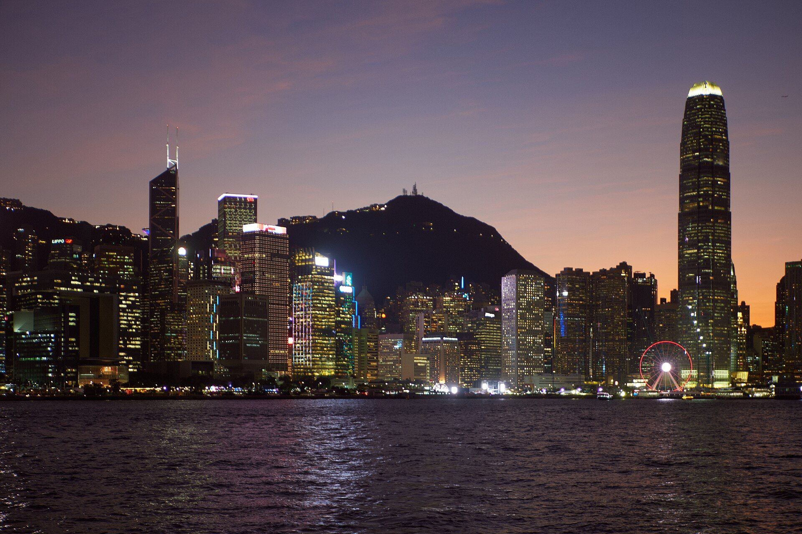
Hong Kong
Wednesday 2 to Sunday 6 December 2026, with FKJ on Thursday night.
Next
Wed 2 Dec, 22:25
CX469 leaves Taipei for Hong Kong.
Flight out
Wed 2 Dec, 22:25
CX469, Cathay Pacific, one economy seat
Hotel
2 to 6 Dec
Oasis Aurum 181, Harbour Double Room
Concert
Thu 3 Dec, 20:00
FKJ at AsiaWorld-Expo, two tickets
What we came for
Six ways into the list of places.
Before you fly
8 to do
Use blank white A4 paper.
Message them on Trip.com.
Look in the Cityline email.
Collect them at the venue’s ticket office.
For Friday at 19:00.
Five of the places here take cash only.
The hotel takes cash or a card.
Fixed times
All in Hong Kong time.
- Wed 22:25CX469 to Hong KongTaipei T1
- Thu 00:20Land, then a taxiHong Kong T1
- Thu 20:00FKJ, Tyber tourAsiaWorld-Expo
- Sun 12:00Check-out closesOasis Aurum 181
- Sun 14:05CX420 to TaipeiHong Kong T1
Arriving after midnight
A red taxi is the simple way in at that hour.
Show this to the driver
干諾道西 181 號
粵海 181 酒店, Oasis Aurum 181 Hotel
181 Connaught Road West
Open in Maps- Taxi
- About HK$360 with tolls, by the airport’s own guide.
- Train
- The last Airport Express leaves at 00:48. The Island line has shut by then.
- Eat first
- Lin Heung Lau, Level 8 of Terminal 1, serves all night.
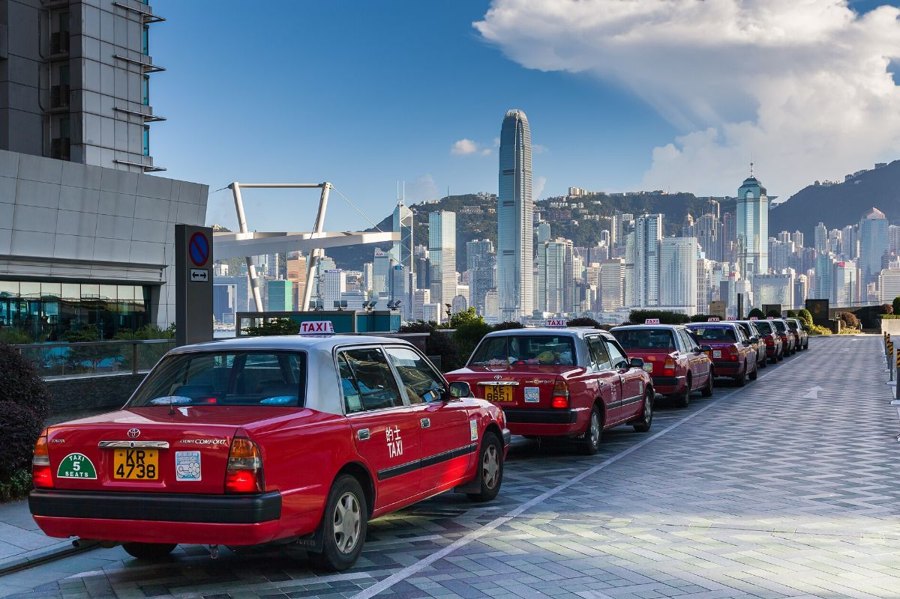
Red taxis on the Kowloon waterfront.
Plan
Wednesday 2 to Sunday 6 December 2026.
Wednesday 2 December
Reach Taipei Terminal 1
Three hours before the flight.
CX469 leaves for Hong Kong
Cathay Pacific, economy.
Booked
Thursday 3 December
Land at Terminal 1
Food on Level 8, all night.
Booked
Check in at Oasis Aurum 181
By taxi, at about this time.
Brisket noodles at Eng Kee
High Street. No cards.
Dried Seafood Street
Des Voeux Road West.
Roast goose at Yat Lok
Stanley Street. Cash only.
Airport Express to the show
28 minutes. Collect tickets there.
FKJ, Tyber tour
AsiaWorld-Expo, Hall 10.
Booked
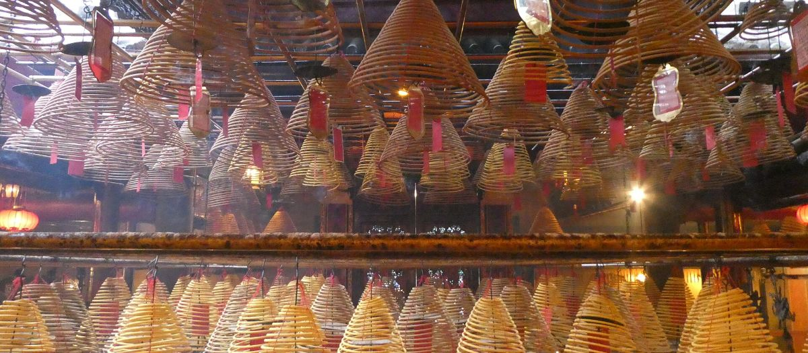
Friday 4 December
Dim sum at Lin Heung Lau
Des Voeux Road Central.
Man Mo Temple, PMQ, Tai Kwun
All three are free.
Wonton noodles at Tsim Chai Kee
Wellington Street. Cash only.
The Peak by bus 15
Free view, Lugard Road.
Oysters and wine at Brut!
Book online.
Dinner at Bistrot du Vin
On your road. Book a table.
A pint at The National
Wyndham Street.
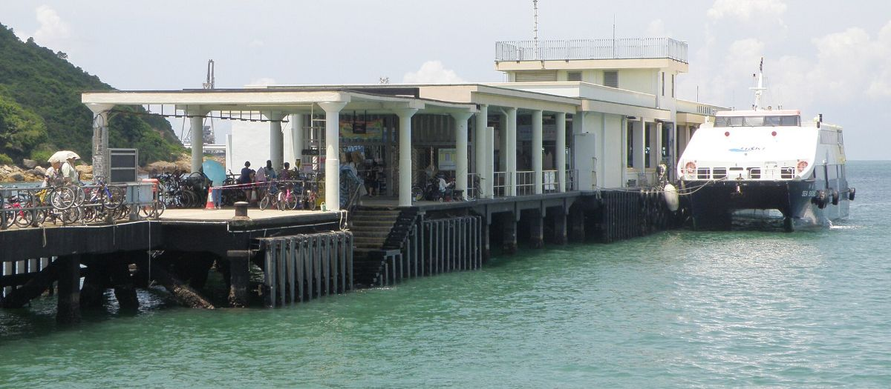
Saturday 5 December
Ferry to Lamma Island
Central Pier 4. 27 minutes.
Seafood lunch in Yung Shue Wan
Then The Beer Shack taproom.
Live bands at The Wanch
Y Rock, Jaffe Road.
Star Ferry to Tsim Sha Tsui
Upper deck, HK$6.50.
Temple Street Night Market
Jordan, Exit A.
Chelsea v Liverpool at Delaney’s
Peking Road. Guinness on tap.
Four more kick-offs
Man Utd v Coventry is one of them.
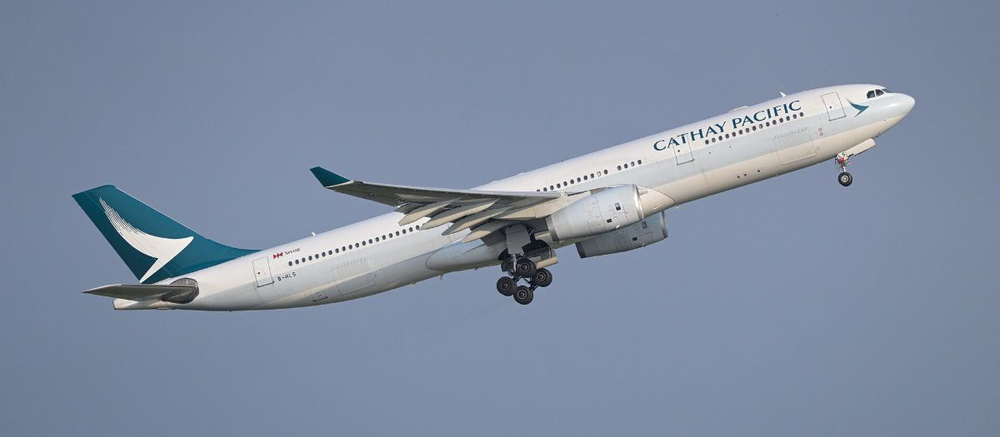
Sunday 6 December
Breakfast at the hotel
Buffet until 10:30.
Check out, head to the airport
In-town check-in shuts at 12:35.
CX420 leaves for Taipei
Terminal 1. Lands 15:50.
Booked
What is booked
Booking numbers stay in your email, not on this page.
Flight out
Wed 2 Dec, 22:25
CX469, Cathay Pacific, one economy seat
Ticketed
Hotel
2 to 6 Dec
Oasis Aurum 181, Harbour Double Room
Paid in full
Concert
Thu 3 Dec, 20:00
FKJ at AsiaWorld-Expo, two tickets
Collect tickets
Flight home
Sun 6 Dec, 14:05
CX420, Cathay Pacific, one economy seat
Ticketed
Places
Checked on 23 November 2026. Confirm hours before you go.
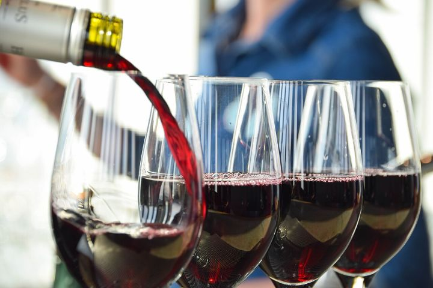
MapBistrot du VinFrench bistro on your road. Wines at shop prices.
- Where
- 165 to 166 Connaught Road West, at The Fine Wine Experience
- Hours
- Sources disagree. Confirm when you book.
- Note
- On Saturday 5 December a Champagne dinner runs at 19:00 for HK$1,080.
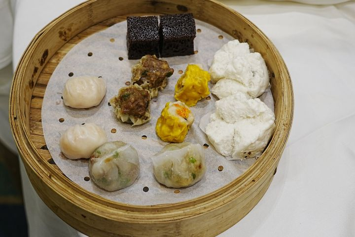
MapLin Heung Lau 蓮香樓Trolley dim sum in Sheung Wan.
- Where
- 249 to 253 Des Voeux Road Central, Sheung Wan. It moved here in May 2026.
- Hours
- 09:00 to 23:00 on an undated listing. Check before you go.
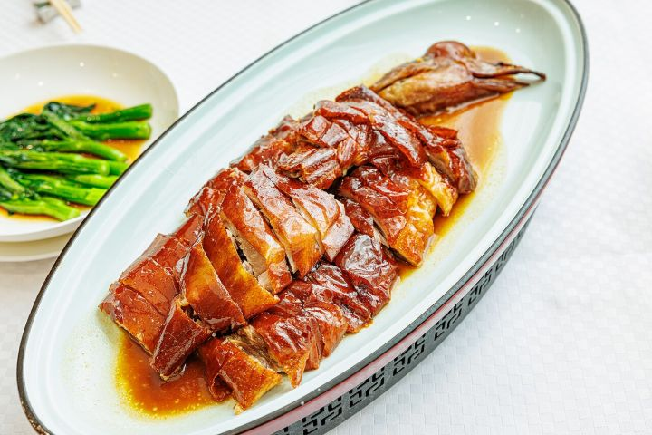
MapYat LokRoast goose over rice noodles in Central.
- Where
- 34 to 38 Stanley Street, Central
- Hours
- 10:00 to 20:30 daily
- Note
- No cards. The goose runs out early. Shared dishes from HK$130 in July 2026.
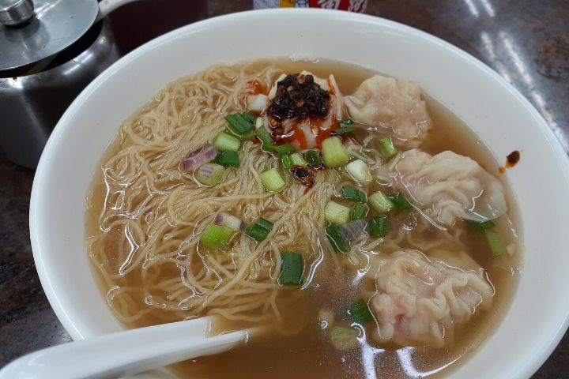
MapTsim Chai KeeWonton noodles with prawn and pork.
- Where
- 98 Wellington Street, Central
- Hours
- 11:00 to 21:30 daily
- Note
- Cash only. Expect a queue.
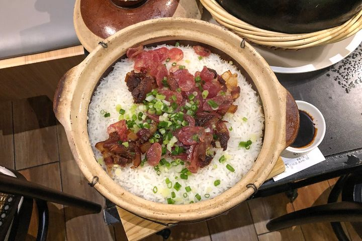
MapKwan Kee Clay Pot RiceClaypot rice, nights only.
- Where
- 263 Queen’s Road West, Sai Ying Pun
- Hours
- 17:00 to 22:00 daily
- Note
- Cash only. Each pot takes about 30 minutes.
- Map
Po KeeRoast goose leg noodles near the hotel.
- Where
- 425P Queen’s Road West, Sai Ying Pun
- Hours
- 11:00 to 19:00, Monday to Saturday. Closed Sunday.
- Note
- Cash only. Pork is gone by 14:00 and goose by 16:00.
- Map
Eng Kee Noodle ShopBrisket noodles in Sai Ying Pun, open from 09:30.
- Where
- 32 High Street, Sai Ying Pun
- Hours
- 09:30 to 19:00 daily
- Note
- No cards.
- Map
Tim Ho Wan, Sham Shui PoBaked barbecue pork buns before the markets.
- Where
- 9 to 11 Fuk Wing Street, Sham Shui Po
- Hours
- 08:00 to 21:30 daily
- Note
- Cards accepted.
- Map
Kam Wah CafePineapple bun with butter, and milk tea.
- Where
- 45 to 47 Bute Street, Mong Kok
- Hours
- 06:30 to 22:00, as listed in July 2026
- Map
Trusty Congee KingCongee with pork liver and scallop, Wan Chai.
- Where
- 7 Heard Street, Wan Chai
- Hours
- 11:00 to 22:00 daily
- Note
- Cards accepted.
- Map
Kung Wo Beancurd FactoryTofu pudding and fresh soy milk.
- Where
- 118 Pei Ho Street, Sham Shui Po
- Hours
- 07:00 to 21:00 daily
- Map
Lin Heung Lau, Terminal 1Open all night at the airport, Level 8.
- Where
- Level 8, Departures, public area, Terminal 1
- Note
- 12% off dinner and late supper with an event ticket, until 31 January 2027.
- Map
Tai Cheong BakeryEgg tarts at HK$12 each.
- Where
- 35 Lyndhurst Terrace, Central, on an older listing
- Note
- Check the branch is open before you go.
- Map
LouiseFrench, one Michelin star, inside PMQ.
- Where
- PMQ, 35 Aberdeen Street, Central
- Hours
- Dinner 18:00 to 23:00 daily
- Note
- About HK$800 a head, corkage HK$500, in a 2026 guide.
- Map
AmberThree Michelin stars at The Landmark.
- Where
- 7th floor, Mandarin Oriental The Landmark, 15 Queen’s Road Central
- Note
- Dinner HK$2,500, corkage HK$1,000, in a 2026 guide. The hotel reopened in 2026 after a refit, so check before you book.
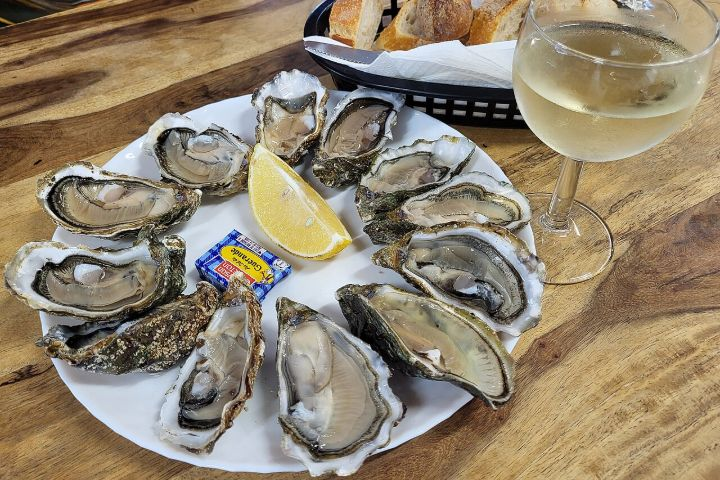
MapBrut!Natural wine and oysters.
- Where
- Shop C, 1 Second Street, Sai Ying Pun
- Hours
- Thu 18:00 to 22:30. Fri 16:00 to 23:00. Sat 12:00 to 15:00 and 16:00 to 23:00. Sun 12:00 to 15:00 and 16:00 to 21:00.
- Note
- Oyster hour runs 16:00 to 18:00, Friday to Sunday. Bookings are online only.
- Map
Crushed Wine BarSmall growers by the glass, with a shop.
- Where
- Shop A, 6 to 8 Second Street, Sai Ying Pun
- Hours
- Thu and Fri 16:00 to 23:00. Sat and Sun 12:00 to 23:00.
- Map
La CaveA dozen seats, French bottles and cheese.
- Where
- Shop E, Fook Moon Building, 56 to 72 Third Street, Sai Ying Pun
- Hours
- Tuesday to Sunday, 16:00 to 23:00
- Note
- It is tiny, so book.
- Map
La CabaneOne of the city’s older natural wine bars.
- Where
- 62 Hollywood Road, Central
- Hours
- Thu 15:00 to 00:00. Fri 15:00 to 01:00. Sat 12:00 to 01:00. Closed Sunday.
- Map
Bourke’sWalk-in wine bar in Soho, happy hour to 19:00.
- Where
- 46 Peel Street, Soho
- Hours
- Thu and Fri from 17:00. Sat from 15:00. Sun from 12:00.
- Note
- A festive Sunday roast on 6 December costs HK$350.
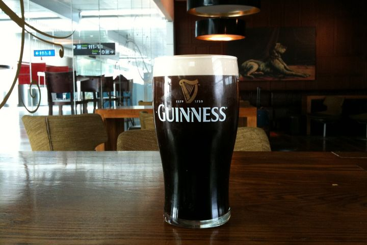
MapThe NationalA new Irish pub in Central. A pint is HK$85.
- Where
- The Centrium, 60 Wyndham Street, Central
- Hours
- Monday to Saturday, 17:00 to 00:00. Closed Sunday.
- Note
- A pint is HK$85. It opened in November 2026, and the pour takes 119 seconds by the pub’s own count.
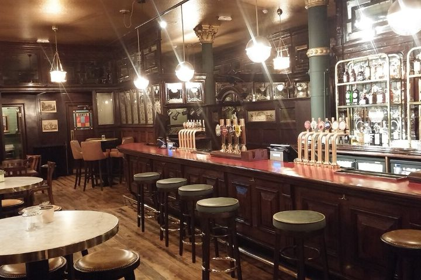
MapDelaney’s KowloonGuinness on tap and football on screens, in Tsim Sha Tsui.
- Where
- Basement, Mary Building, 71 to 77 Peking Road, Tsim Sha Tsui
- Hours
- Mon to Fri 12:00 to 00:00. Sat and Sun 09:00 to 00:00.
- Map
The BoarLondon pub in Soho. Guinness, no screens.
- Where
- 55 Elgin Street, Soho
- Hours
- Tuesday to Sunday from 12:00. Closed Monday.
- Map
Pete’s PlaceThe nearest pub to the hotel. Check it is open.
- Where
- 23A High Street, Sai Ying Pun
- Hours
- Mon to Fri 15:00 to 00:00. Sat and Sun 14:00 to 00:00, by its own site.
- Note
- No report from 2026 was found.
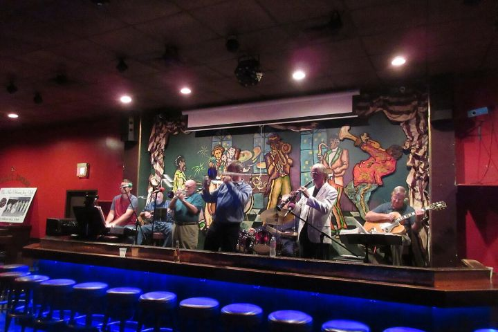
MapThe WanchLive bands in Wan Chai.
- Where
- 1st floor, Henan Building, 90 to 92 Jaffe Road, Wan Chai
- Fri 4 Dec
- Purple Express, 21:00 to 22:15
- Sat 5 Dec
- Y Rock 16:00. David Ma 19:00 to 20:45. Crosstown Collective 21:15 to 22:30.
- Map
Coda Jazz KissaJazz listening bar in Sai Ying Pun.
- Where
- 112 First Street, Sai Ying Pun
- Note
- Sessions were listed at HK$90 and HK$180. No December line-up was found, so check.
- Map
Ned Kelly’s Last StandTrad jazz in Tsim Sha Tsui from about 21:30.
- Where
- 11A Ashley Road, Tsim Sha Tsui
- Note
- No band on Sundays. Times come from an undated guide, so check.
- Map
The White StagThree screens, open to 04:00 at weekends.
- Where
- The Broadway, 54 to 62 Lockhart Road, Wan Chai
- Note
- Ask which match it will show.
- Map
The Queen VictoriaLive football, late kick-offs included.
- Where
- Gaylord Commercial Building, 108 Lockhart Road, Wan Chai
- Note
- Happy hour runs 16:00 to 22:00.
- Map
The GlobeSoho pub, open daily from 10:00.
- Where
- Garley Building, 45 to 53 Graham Street, Central
- Note
- It shows sport, so ask about your match. Tables book on its site.
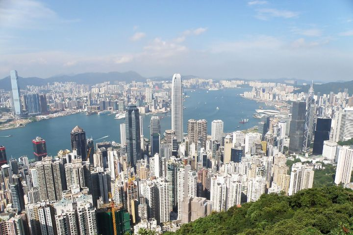
MapThe PeakThe skyline view, by bus 15.
- Cheap way
- Bus 15 from Exchange Square, then the free Lugard Road lookout, a flat 20 minute walk.
- Tram
- HK$116 return. Sky Terrace 428 is HK$80 more.
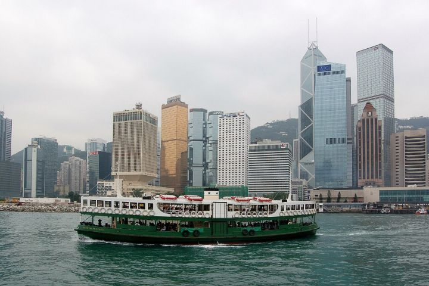
MapStar FerryCentral to Tsim Sha Tsui for HK$5.
- Fares
- Upper deck HK$5 on weekdays, HK$6.50 at weekends.
- Hours
- 06:30 to 23:30, every 6 to 12 minutes
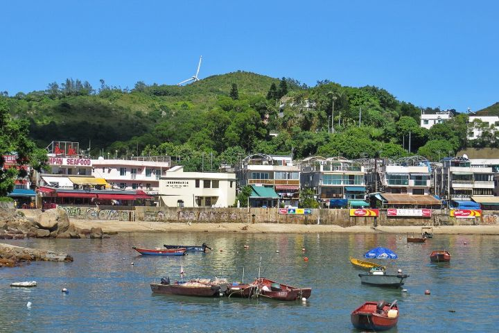
MapLamma IslandSeafood and a taproom, with no hiking.
- Ferry
- Central Pier 4 to Yung Shue Wan: about 27 minutes, HK$24.90 Monday to Saturday.
- Note
- One guide lists The Beer Shack, with nine local beers on tap. Check it is open.
TramsAny ride along the island for HK$3.30.
- Note
- Sit at the front upstairs. Pay by Octopus, as no change is given.
- Map
Mid-Levels EscalatorA free ride up through Soho.
- Hours
- Downhill 06:00 to 10:00. Uphill 10:00 to midnight.
- Map
Man Mo TempleIncense coils on Hollywood Road. Free.
- Hours
- 08:00 to 18:00 on travel listings. Check before you go.
- Map
Tai KwunThe old police station and prison. Free.
- Hours
- Site 08:00 to 23:00. Galleries 11:00 to 19:00, closed Monday.
- Map
PMQDesign shops in old police quarters. Free.
- Hours
- Shops 12:00 to 19:00. Cafes 09:00 to 23:00.
- Map
Hong Kong Observation WheelA harbour ride for HK$20.
- Where
- 33 Man Kwong Street, Central
- Hours
- Mon to Thu 12:00 to 22:00. Fri to Sun 11:00 to 23:00.
- Map
M+A free roof garden over the harbour.
- Note
- Galleries cost HK$190. Open to 22:00 on Friday, closed Monday.
- Map
WinterFest lightsA 22 metre tree in Statue Square, lit nightly.
- Note
- The light show runs at 19:00 until 5 January. A Symphony of Lights ended on 18 November.
- Map
Belcher Bay PromenadeA sunset boardwalk in Kennedy Town.
- Where
- Shing Sai Road, six minutes from Kennedy Town station, Exit C
- Map
Dried Seafood StreetAbalone, fish maw and herbs, close to the hotel.
- Where
- Des Voeux Road West and Ko Shing Street
- Map
Temple Street Night MarketStalls and street food, lively after 19:00.
- Where
- Jordan station, Exit A
- Hours
- Stalls set up about 14:00 and close about 23:00.
- Map
Apliu Street, Sham Shui PoElectronics and a flea market.
- Hours
- About noon to 21:00. Sources differ.
- Map
Ladies’ MarketClothes and bags in Mong Kok. Expect to haggle.
- Where
- Mong Kok station, Exit D3 or E2
- Hours
- About 12:00 to 22:00. Busiest from 16:00.
- Map
Cat StreetCurios and antiques in Sheung Wan.
- Hours
- About 11:00 to 18:00. Many stalls close on Sunday.
Nothing matches .
Clear the search to see every place.
Info
What do we show at the border?
The printed and signed PAR slip, with the passport it names. Carry the return ticket and the hotel booking as well.
The airline in Taipei checks the slip too. It allows visits of up to 14 days, and the officer makes the final call. Visitors fill in no arrival card.
How do we reach the hotel from the airport?
A red taxi costs about HK$360 with tolls, plus HK$6 for each bag in the boot. Show the driver the address on Overview. Uber also picks up at the airport.
The last Airport Express leaves at 00:48, and the Island line has closed before it arrives, so the train still ends in a taxi. Night buses NA11 and N11 stop in Central, not near the hotel.
How do we get to the concert?
Ride the Island line to Central, walk to Hong Kong Station, then take the Airport Express to AsiaWorld-Expo: 28 minutes, HK$120 one way by Octopus. The venue lists a HK$65 same-day return for 3 December, so check its event-day page.
The standing queue area opens about 16:00 and the hall about 18:00. Bags over 38 by 30 by 20 cm are refused, as are outside food and drink.
Coming back, the 00:12 train is the last to meet the Island line. The final train is 00:45, then a taxi from Hong Kong Station.
How do we collect the tickets?
At a Cityline kiosk, with the redeem code from the confirmation email and the password you set when paying, or the QR code in the Cityline app. The receipt alone does not admit you.
The AsiaWorld-Expo ticket office, in the first floor lobbies, opens 05:45 to 01:30 daily. In town, Eternal East at Wing On Centre, Sheung Wan, opens 09:30 to 18:30. The airport terminal has no kiosk.
How does paying work?
Carry cash. Yat Lok, Po Kee, Tsim Chai Kee, Kwan Kee and Eng Kee take no cards, and some shops refuse HK$500 and HK$1,000 notes. Most restaurants add 10% service, so a tip is optional.
A Tourist Octopus card costs HK$39 at the airport 7-Eleven or the MTR desk. An iPhone can hold one through the Octopus App for Tourists. Trams take Octopus or exact coins.
Wine carries no duty in Hong Kong, according to Customs.
What is on that week?
Clockenflap runs 4 to 6 December at the Central Harbourfront, so bars in Central will be busy.
WinterFest lights run nightly. No public holiday falls on these dates.
What is the weather like?
December averages run from 16 to 20°C, with about five rain days in the month and 70% humidity. Pack a light jacket for the ferry.
Which matches are on?
Hong Kong time, from the Premier League fixture list. Times can still move.
- Sat 20:30
- Chelsea v Liverpool
- Sat 23:00
- Aston Villa v Crystal Palace, Bournemouth v Hull, Man Utd v Coventry, Leeds v Ipswich
- Sun 01:30
- Nottingham Forest v Brighton
Now TV carries every match in Hong Kong, so ask the pub which one it will show.
When do we leave on Sunday?
Leave the hotel about 10:00. Cathay’s in-town check-in at Hong Kong Station takes bags until 12:35 and needs a chip passport. At the airport, its desks open at 11:05 and close at 13:05.